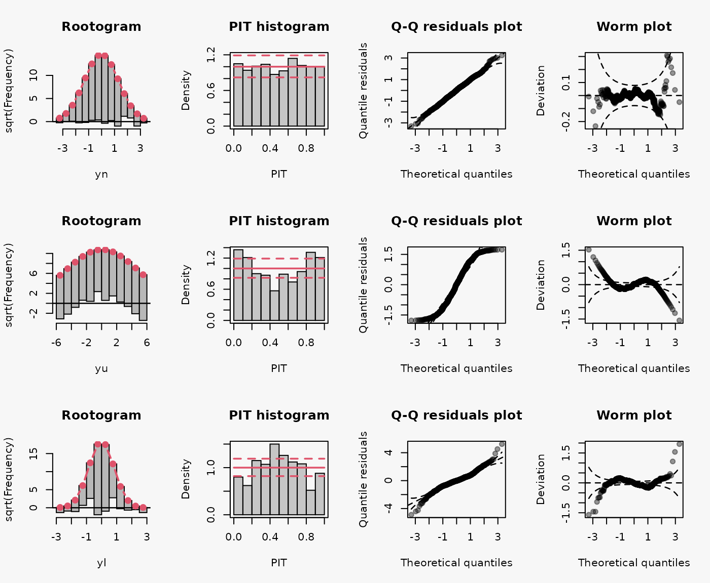

Graphical Model Assessment under Different Model Misspecifications
Moritz Lang, Achim Zeileis
graphical_model_assessment_original.Rmd1a Wrong distributional assumption w/o regressors
A Poisson model without regressors is fitted to two simulated datasets from a Poisson and a negative binomial distribution; both distributions have a mean \(\mu = 3\), the negative binomal has a shape parameter \(\Theta = 2\):
d1a <- data.frame(
yp = rpois(100, lambda = 3),
ynb = rnbinom(100, mu = 3, size = 2)
)
lala
## correct Poisson model fit (DGP: Poisson)
m1a_p <- glm(yp ~ 1, family = poisson, data = d1a)
## incorrect Poisson model fit (DGP: neg. binomial)
m1a_nb1 <- glm(ynb ~ 1, family = poisson, data = d1a)
## correct neg. binomial model fit (DGP: Neg. binomial)
m1a_nb2 <- glm.nb(ynb ~ 1, data = d1a)In the first and third line, a Poisson model and negative binomial model is fitted to simulated data from a Poisson and negative binomial distribution, respectively. In the second line, a false response distribution is assumed by fitting a Poisson model to simulated data from a negative binomial model. The following characteristics can be seen in the model assessment graphs for the misspecified model (2nd line):
- Wave-like pattern in the rootogram around the horizontal reference line: The data exhibit too many small counts, notably zeros, as well as too many large counts for a Poisson model to provide an adequate fit. This leads to a misspecified model fit reflecting a substantial amount of overdispersion that is not captured by the fitted Poisson distribution (underdispersive model fit) (Kleiber and Zeileis 2016).
- U-shaped PIT: The values attained by the predictive CDF at the observations are located with increased frequency at both ends of the CDF, indicating an underdispersed predictive distribution (model fit).
- Inverse S-shaped QQ-plot: Quantile residuals are over-dispersed relative to the normal distribution, i.e., we experience an increased number of outliers or the underlying distribution of the residuals has fatter tails than a normal distribution (Love 2018; Yearsley 2021). In terms of quantiles this means that the first quantile is much less than the first theoretical quantile and the last quantile is greater than the last theoretical quantile. This is reflected in the corresponding Q-Q plot (Kross 2016).
1b Wrong distributional assumption w/ regressors
Artificial data from negative binomial and Poisson distribution with regressors:
d1b <- data.frame(
x = runif(500, 0, 2)
)
d1b$mu <- 1 + 2 * d1b$x
d1b$yp <- rpois(500, lambda = d1b$mu)
d1b$ynb <- rnbinom(500, mu = d1b$mu, size = 2)
## correctly specified Poisson model fit
m1b_p <- glm(yp ~ x, data = d1b, family = poisson)
## misspecified Poisson model fit
m1b_nb1 <- glm(ynb ~ x, data = d1b, family = poisson)
## correctly specified Negbin model fit
m1b_nb2 <- glm.nb(ynb ~ x, data = d1b)
As for the example 1a, a false response distribution is assumed for the 2nd model by fitting a Poisson model to simulated data from a negative binomial model. Hence, similar characteristics can be seen in the model assessment graphs for the misspecified model (2nd line).
2a Underestimating the tails of the distribution w/o regressors
Artificial data from a Student t distribution with four degrees of freedom without regressors:
d2a <- data.frame(
yt = rt(1000, 4)
)
## correct student-t fit
m2a_t <- crch(yt ~ 1, dist = "student", data = d2a)
## incorrect normal fit
m2a_n <- crch(yt ~ 1, dist = "gaussian", data = d2a)Wrong assumption of the underlying response distribution, estimating a Normal distribution instead of a Student t distribution with four degrees of freedom, leads to an underestimting of the heavy tails and an underdispersive model fit (shown in the 2nd line):
- Tails too light -> overdispersive model fit.
- inverse U-shaped PIT, inverse S-shaped QQ-plot.
2b Underestimating the tails of the distribution w/ regressors
Artificial data from a Student t distribution with four degrees of freedom with regressors:
d2b <- data.frame(
x = runif(1000, 0, 1)
)
d2b$yt <- d2b$x + 1 * rt(1000, 4)
d2b$yn <- d2b$x + 1 * rnorm(1000)
## correct student-t fit
m2b_t <- crch(yt ~ x, dist = "student", data = d2b)
## incorrect normal fit
m2b_n1 <- crch(yt ~ x, dist = "gaussian", data = d2b)
## correct normal fit
m2b_n2 <- crch(yn ~ x, dist = "gaussian", data = d2b)Wrong assumption of the underlying response distribution, estimating a Normal distribution instead of a Student t distribution with four degrees of freedom, leads to an underestimting of the heavy tails and an underdispersive model fit (shown in the 2nd line):
- Tails too light -> overdispersive model fit.
- inverse U-shaped PIT, inverse S-shaped QQ-plot.
3a Over-/underdispersive model fits w/o regressors
Artificial data from a Gaussian, Uniform and Laplace (mu = 0, s = 0.4) distribution without regressors:
d3a <- data.frame(
yn = rnorm(1000),
yu = runif(1000, min = -6, max = 6),
yl = rlaplace(1000, m = 0, s = 0.4)
)
## correct gaussian fit
m3a_n <- crch(yn ~ 1, dist = "gaussian", data = d3a)
## incorrect fit (underdispersive model fit)
## [U-shaped PIT, S-shaped QQ-plot, "thin tails" worm plot]
m3a_u <- crch(yu ~ 1, dist = "gaussian", data = d3a)
## incorrect fit (overdispersive model fit)
## [inverse U-shaped PIT, inverse S-shaped QQ-plot, "fat tails" worm plot]
m3a_l <- crch(yl ~ 1, dist = "gaussian", data = d3a)
Wrong assumption of underlying distribution, Uniform or Laplace distribution instead of a Normal distribution, leads to an underdispersive and overdispersive model fit (shown in the 2nd and 3rd lines):
- Underdispersive model fit: U-shaped PIT, S-shaped QQ-plot, “thin tails” worm plot
- Overdispersive model fit: inverse U-shaped PIT, inverse S-shaped QQ-plot, “fat tails” worm plot
The largest/smallest values are not as large/small as expected or under-dispersed data has a reduced number of outliers (i.e. the true underlying distribution has thinner tails).
3b Over-/underdispersive model fits w/ regressors
Artificial data from a Gaussian, Uniform and Laplace distribution with regressors:
d3b <- data.frame(
x = runif(1000, 0, 1)
)
d3b$yn <- 0 + 1 * rnorm(1000, mean = d3b$x)
d3b$yu <- 0 + 1 * runif(1000, min = d3b$x - 1, max = d3b$x + 1)
d3b$yl <- 0 + 1 * rlaplace(1000, m = d3b$x, s = 0.4)
## correct gaussian fit
m3b_n <- crch(yn ~ x, dist = "gaussian", data = d3b)
## incorrect fit (underdispersive model fit)
## [U-shaped PIT, S-shaped QQ-plot, "thin tails" worm plot]
m3b_u <- crch(yu ~ x, dist = "gaussian", data = d3b)
## incorrect fit (overdispersive model fit)
## [inverse U-shaped PIT, inverse S-shaped QQ-plot, "fat tails" worm plot]
m3b_l <- crch(yl ~ x, dist = "gaussian", data = d3b)Wrong assumption of underlying distribution, Uniform or Laplace distribution instead of a Normal distribution, leads to an underdispersive and overdispersive model fit (shown in the 2nd and 3rd lines):
- Underdispersive model fit: U-shaped PIT, S-shaped QQ-plot, “thin tails” worm plot
- Overdispersive model fit: inverse U-shaped PIT, inverse S-shaped QQ-plot, “fat tails” worm plot
4a Not Accounting for Skewness w/o regressors
Artificial data from a Normal distribution with no skewness, as well as from a right skewed, and left skewed Normal distribution without regressors:
d4a <- data.frame(
yn = rsn(n = 100, xi = 0, omega = 1, alpha = 0, tau = 0),
yrs = rsn(n = 100, xi = 0, omega = 1, alpha = 5, tau = 0),
yls = rsn(n = 100, xi = 0, omega = 1, alpha = -5, tau = 0)
)
## correct gaussian fit
m4a_n <- crch(yn ~ 1, data = d4a, dist = "gaussian")
## incorrect fit: right-skewed residuals
m4a_rs <- crch(yrs ~ 1, data = d4a, dist = "gaussian")
## incorrect fit: left-skewed residuals
m4a_ls <- crch(yls ~ 1, data = d4a, dist = "gaussian")
Wrong assumption of underlying distribution, Normal distribution instead of rigth and left skewed Normal distriubtion, leads to a misspecified model fits (shown in the 2nd and 3rd lines):
- Right-skewed residuals: curved (positive skewed) QQ-Plot, U-shape wormplot
- Left-skewed residuals: curved (negative skewed) QQ-Plot, inverse U-shape wormplot
4b Not Accounting for Skewness w/o regressors
Artificial data from a Normal distribution with no skewness, as well as from a right skewed, and left skewed Normal distribution with regressors:
d4b <- data.frame(
x = rnorm(1000, 15, 1.2),
z <- rnorm(1000, -0.5, 0.4)
)
d4b$mu <- 0.4 + 0.9 * d4b$x
d4b$sigma <- exp(0.3 + 0.6 * exp(d4b$z))
d4b$yn <- rsn(n = 1000, xi = d4b$mu, omega = d4b$sigma, alpha = 0, tau = 0)
d4b$yrs <- rsn(n = 1000, xi = d4b$mu, omega = d4b$sigma, alpha = 5, tau = 0)
d4b$yls <- rsn(n = 1000, xi = d4b$mu, omega = d4b$sigma, alpha = -5, tau = 0)
## correct gaussian fit
m4b_n <- crch(yn ~ x | z, data = d4b, dist = "gaussian")
## incorrect fit: right-skewed residuals
## [curved (positive skewed) QQ-Plot, U-shape wormplot]
m4b_rs <- crch(yrs ~ x | z, data = d4b, dist = "gaussian")
## incorrect fit: left-skewed residuals
## [curved (negative skewed) QQ-Plot, inverse U-shape wormplot]
m4b_ls <- crch(yls ~ x | z, data = d4b, dist = "gaussian")As for 4a, wrong assumption of underlying distribution, Normal distribution instead of rigth and left skewed Normal distriubtion, leads to a misspecified model fits (shown in the 2nd and 3rd lines):
- Right-skewed residuals: curved (positive skewed) QQ-Plot, U-shape wormplot
- Left-skewed residuals: curved (negative skewed) QQ-Plot, inverse U-shape wormplot
5a Not Accounting for Truncation w/o regressors
Artificial data from Logistic distribution with and without truncation at zero. Data generating process without regressors:
d5a <- data.frame(
ytn = rtnorm(1000, 0.3, 0.6, left = 0),
yn = rtnorm(1000, 0.3, 0.6, left = -Inf)
)
## correct truncated normal fit
m5a_tn <- crch(ytn ~ 1, data = d5a, dist = "gaussian", truncated = TRUE, left = 0)
## incorrect normal fit
m5a_n1 <- crch(ytn ~ 1, data = d5a, dist = "gaussian", truncated = TRUE, left = -Inf)
## correct normal fit
m5a_n2 <- crch(yn ~ 1, data = d5a, dist = "gaussian", truncated = TRUE, left = -Inf)Wrong assumption of underlying distribution, not considering truncation at zero, leads to misspecified model fit in the 2nd line:
- \(\dots\)
5b Not Accounting for Truncation w/ regressors
Artificial data from Logistic distribution with and without truncation at zero. Data generating process with regressors:
d5b <- data.frame(
x = rtnorm(1000, 0.4, 0.6, left = 0),
z <- rnorm(1000, -0.6, 0.2)
)
d5b$mu <- 0.2 + 1.8 * d5b$x
d5b$sigma <- exp(0.1 + 0.6 * exp(d5b$z))
d5b$ytn <- rtnorm(1000, mean = d5b$mu, sd = d5b$sigma, left = 0)
d5b$yn <- rtnorm(1000, mean = d5b$mu, sd = d5b$sigma)
## correct truncated normal fit
m5b_tn <- crch(ytn ~ x | z, data = d5b, dist = "gaussian", truncated = TRUE, left = 0)
## incorrect normal fit
m5b_n1 <- crch(ytn ~ x | z, data = d5b, dist = "gaussian", truncated = TRUE, left = -Inf)
## correct normal fit
m5b_n2 <- crch(yn ~ x | z, data = d5b, dist = "gaussian", truncated = TRUE, left = -Inf)Wrong assumption of underlying distribution, not considering truncation at zero, leads to misspecified model fit in the 2nd line:
- \(\dots\)
6a Not Accounting for Censoring w/o regressors
Artificial data from Logistic distribution with and without censoring at zero. Data generating process without regressors:
d6a <- data.frame(
ycn = rcnorm(1000, 0.4, 0.6, left = 0),
yn = rcnorm(1000, 0.4, 0.6, left = -Inf)
)
## correct censored normal fit
m6a_cn <- crch(ycn ~ 1, data = d6a, dist = "gaussian", truncated = FALSE, left = 0)
## incorrect normal fit
m6a_n1 <- crch(ycn ~ 1, data = d6a, dist = "gaussian", truncated = FALSE, left = -Inf)
## correct normal fit
m6a_n2 <- crch(yn ~ 1, data = d6a, dist = "gaussian", truncated = FALSE, left = -Inf)Wrong assumption of underlying distribution, not considering censoring at zero, leads to misspecified model fit in the 2nd line:
- \(\dots\)
6b Not Accounting for Censoring w/ regressors
Artificial data from Logistic distribution with and without censoring at zero. Data generating process with regressors:
d6b <- data.frame(
x = rcnorm(1000, 0.4, 0.6, left = 0),
z <- rnorm(1000, -0.6, 0.2)
)
d6b$mu <- 0.2 + 1.8 * d6b$x
d6b$sigma <- exp(0.1 + 0.6 * exp(d6b$z))
d6b$ycn <- rcnorm(1000, mean = d6b$mu, sd = d6b$sigma, left = 0)
d6b$yn <- rcnorm(1000, mean = d6b$mu, sd = d6b$sigma)
## correct censored normal fit
m6b_cn <- crch(ycn ~ x | z, data = d6b, dist = "gaussian", truncated = FALSE, left = 0)
## incorrect normal fit
m6b_n1 <- crch(ycn ~ x | z, data = d6b, dist = "gaussian", truncated = FALSE, left = -Inf)
## correct normal fit
m6b_n2 <- crch(yn ~ x | z, data = d6b, dist = "gaussian", truncated = FALSE, left = -Inf)Wrong assumption of underlying distribution, not considering censoring at zero, leads to misspecified model fit in the 2nd line:
- \(\dots\)
Summary
- U-shaped histograms indicate underdispersed predictive distributions, hump or inverse-U shaped histograms point at overdispersion, and skewed histograms occur when central tendencies are biased (Czado, Gneiting, and Held 2009).
References
Czado, Claudia, Tilmann Gneiting, and Leonhard Held. 2009. “Predictive Model Assessment for Count Data.” Biometrics 65 (4): 1254–61. https://doi.org/10.1111/j.1541-0420.2009.01191.x.
Kleiber, Christian, and Achim Zeileis. 2016. “Visualizing Count Data Regressions Using Rootograms.” The American Statistician 70 (3): 296–303. https://doi.org/10.1080/00031305.2016.1173590.
Kross, Sean. 2016. “A Q-Q Plot Dissection Kit.” https://seankross.com/2016/02/29/A-Q-Q-Plot-Dissection-Kit.html.
Love, Thomas E. 2018. “Data Science for Biological, Medical and Health Research: Notes for 431.” Case Western Reserve University. https://thomaselove.github.io/2018-431-book/.
Yearsley, Jon. 2021. “Examples of Quantile-Quantile Plots.” School of Biology; Environmental Science, UCD Dublin. https://www.ucd.ie/ecomodel/Resources/QQplots_WebVersion.html.